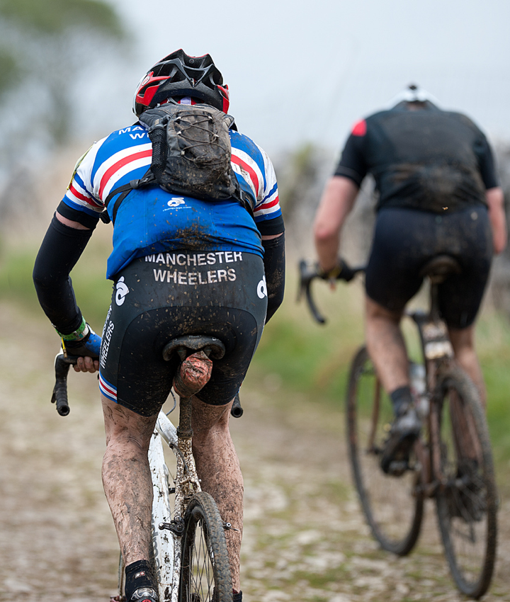

THE 2014 CROSS SEASON SO FAR
Spring 2015 Journal | 1st March 2015
It's great to be writing an update on cyclocross the week after the best day of bike racing I've seen this year - the World Cup at Milton Keynes, the first Cyclocross WC outside mainland Europe. It was a fantastic technical and physically tough course made really hard with the mud that was set around two natural bowls allowing for great viewing of almost all the course from a couple of vantage points, and parts of the course out in the country where you could admire the best riders in the world at close quarters, 'chapeau' course director and cross legend Simon Burney.